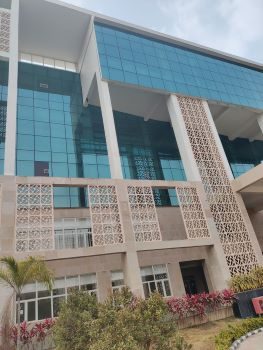
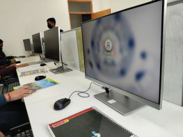
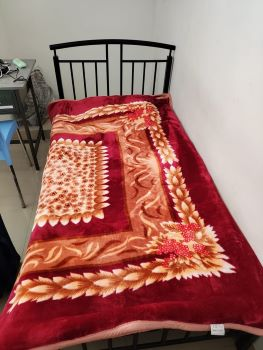
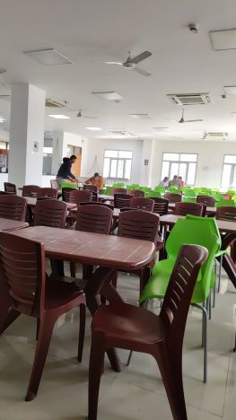
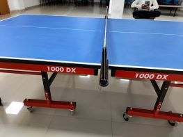
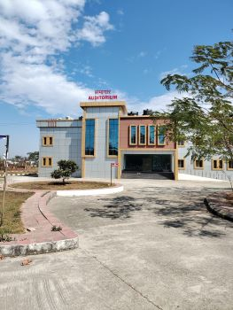
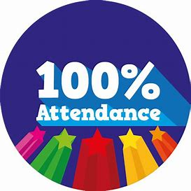

“Deep in the human unconscious is a pervasive need for a logical universe that makes sense.
But the real universe is always one step beyond logic.”
― Frank Herbert, Dune
Campus
A transit campus

Classroom
Class room ambience is quite good. It
would be great to have ultra modern
facilities to enhance smart learning through
activity based curriculum
Good lab facilities are there but I would
rather like to have something that inspires
us to innovate and involve

Gender ratio
Hostel
A temporary apartment accommodation but it is very good.

Mess
Food is satisfactory, but to those of us
who used to take daily
curd/yogurt/buttermilk it is available only
2/3 days a week.
we wish to have more nutritional diet

Sports facilities
A play ground is there but it is limited in
size and variety.

Infrastructure
Small campus with sufficient facilities
Auditorium
A room for cultural activities

Ragging
Free time
Attendance

Contiguous
environment
Sleeping outskirts of the city free from din
and bustle of life